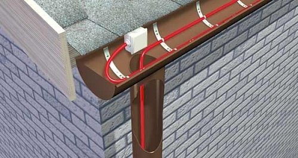

Профессиональный монтаж систем снеготаяния, обогрева кровли, водостоков и открытых площадок под ключ

Мы предлагаем решения для систем обогрева резистивным и саморегулирующим кабелем для различных объектов: от кровли на крыше частного дома до системы подогрева футбольного поля.
Доставка по Москве, Московской области и всей России. Весь товар сертифицирован.
Офисы, торговые центры, производства и частные дома — Москва и Московская область.
В нашей стране с ее суровым, а порой непредсказуемым, климатом вопрос о том, как обогреть свое жилище и место работы всегда стоял далеко не на последнем месте. Использовались разные источники тепла, разные технологии. А сегодня в век развитых технологий различных систем обогрева существует великое множество. И среди них такой удобный, безопасный и высокоэффективный способ, как обогрев с помощью специального обогревающего электрического кабеля. Системы электрообогрева кабелем быстро завоевали популярность и у владельцев квартир и домов, и у частных предпринимателей, и у руководителей крупных производств и служб ЖКХ.
Обогрев с помощью нагревательных кабелей — современное решение, которое используется в жилых, коммерческих и промышленных сферах. Эта технология применяется как для обогрева помещений, так и для защиты от обледенения крыш, водостоков или труб.
Кабель может использоваться для обогрева трубопроводов, кровельных систем, водостоков, полов, промышленных резервуаров, грунта. Кабельные системы обогрева подходят для крупных производственных комплексов, городских улиц, и для частных жилых домов.
Кабельные системы отлично зарекомендовали себя в самых разных условиях, они устойчивы к перепадам температур, влаге, агрессивным средам.
Отсутствие вредных выбросов (CO₂, продуктов сгорания), что снижает нагрузку на окружающую среду.
Системы легко интегрируются с термостатами и датчиками, обеспечивая автоматическое включение/выключение и поддержание заданной температуры.
Греющий кабель занимает мало места, легко укладывается на поверхность, не требуя сложной подготовки.
Точный контроль температуры с помощью термостата позволяет программировать режимы, настраивать зональный обогрев и снижать затраты.
Отзывы клиентов с Яндекс Карт.
Огромная благодарность компании и сотрудникам за отлично выполненную работу. Заказывала монтаж теплого пола в свой салон красоты. Сделали всё аккуратно, быстро и качественно. Никаких нареканий к работе теплого пола нет. Компанию рекомендую
Захарова А.25 июля 2025Заказывали еще осенью установку снегозадерживателей на крышу коттеджа. Сделали очень аккуратно, ценник полностью соответствует качеству работы. Мы довольны результатом, теперь снег не катится как лавина. Спасибо
Бобров Александр5 июля 2025На все 100 доволен сотрудничеством с компанией. Инженер приехал вовремя, составил смету, подсказал как лучше сделать, мы заказывали монтаж обогрева кровли на объекте. Сделали все «под ключ» в точно оговорённые время. Так еще и заключили договор с гарантией. Я доволен
Рыбаков Денис17 июня 2025Для теплого пола заказали саморегулирующийся кабель. Сайт удобный, ассортимент большой. Менеджер оперативно связался и помог выбрать, дал рекомендации по монтажу и эксплуатации. После предоплаты товар доставили на следующий день. Установка прошла без проблем
Максим Фетисов19 марта 2025Заказали у компании Теплокабель-М установку тёплого пола и остались полностью довольны результатом, сотрудники вежливые и работу закончили быстро. Будем обращаться в будущем!
Анастасия Балунова12 января 2025Ставили нам систему от обледенения на крыше. Опытные сотрудники быстро справились с поставленной задачей. Учли пожелания и предоставили лучшие условия. Однозначно рекомендую!
Антон Ковалёв8 октября 2024Наши специалисты подберут оптимальное решение для вашего объекта. Бесплатный выезд специалиста на объект в пределах МКАД.
Перезвоним в течение 15 минут в рабочее время.